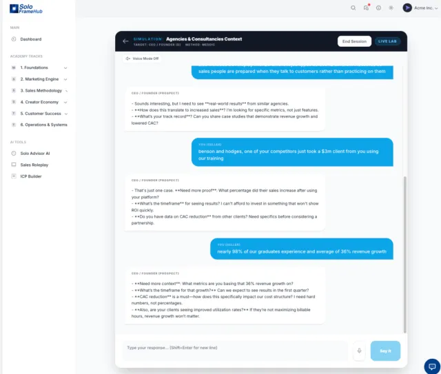

An AI sales coach that reads your pipeline. Voice-to-voice roleplay against a 7-dimensional buyer matrix. A methodology-aware pipeline state machine. One runtime for the team of one to the team of twelve.
Full platform. $29.95/mo introductory. Free during beta.
You already debug your code this methodically. Applying the same discipline to customer acquisition is what the platform is for.
You sent 40 cold emails this week. Two polite no's, 38 ghosts. You assume the problem is you.
It's usually your ICP selection. You're debugging output without validating input - shipping to production without testing the data pipe.
Running Three-Circle ICP and Golden Segment scoring on your actual account list before you write the next outreach sequence.
See the ICP method →Your last discovery call, you talked 70% of the time. Top performers are at 30%.
You pitched because diagnosing feels confrontational. A doctor running an intake isn't being pushy - it's how they earn the right to prescribe.
Teaching the 30-minute diagnostic discovery structure, then running it against voice-to-voice buyer practice before you use it on real pipeline.
See the diagnostic method →23 deals in your CRM. 18 stuck at "Proposal Sent" for 45+ days.
Nothing is checking whether those deals were ever qualified. Every stage a soft pass, every "maybe" a forecast. A system with no gated promotion.
Enforcing Minimum Viable Qualification as a state machine. Deals advance only when Pain, Impact, and Decision are confirmed, not before.
See the MVQ method →Same root cause in all three. Sales was taught to you as charisma, not as engineering. The frameworks below, and the runtime that runs them for you, are the correction.
Every framework the OS teaches and runs is backed by research. Four that separate the method from the folklore.
Founders and small teams don't need a scaled-down enterprise stack. They need a unified system. Here's what changes at every layer when the five live inside one runtime instead of five tabs.
Read a static PDF book.
Linear, passive, and disconnected from anything you're actually running in your pipeline today.
→ Interactive MDX modules, versioned per cohort.
Lessons branch on your ICP, your deal size, and your current progress. The playbook compiles into the runtime - the book is the source code, the OS is the executable.
Practice on live leads - burning real pipeline.
Every missed objection costs a deal. Roleplay with a friend over coffee is theater, not training.
→ Voice-enabled AI roleplay across a 3D matrix.
Claude-powered DISC personas × 13 industries × 4 buyer roles × 11 founder profiles, with RAG fidelity checks against your own documented value prop. Speak to the buyer, hear their voice back, and get scored before revenue is at stake.
Copy-paste data manually into a generic CRM.
The CRM knows deal stages. It doesn't know your methodology, your ICP, or what lesson unblocks the next step.
→ Bi-directional CRM sync on a PAIN → IMPACT → DECISION state machine.
Attio, Pipedrive, Hunter, Notion, Brevo, and WhatsApp stay in lockstep with the OS. Stages only advance when diagnostic criteria are confirmed - and every integration uses your own API keys. No markup, no lock-in, no hostage data.
Ask generic questions in a noisy Discord.
4,000 members. Zero context. The answers are for someone else's business at someone else's stage.
→ DISC-matched cohort pods, algorithmically sorted.
4–6 founders matched on DISC complementarity, deal-size clustering, and curriculum stage. Pre-populated threads, pod dashboard, milestone auto-celebrations, and an AI facilitator running a 3-day Kickoff → Nudge → Synthesis rhythm via n8n cron.
Pay $500/hr for a human coach with zero context.
You spend half the call re-explaining your business. The other half is generic advice scaled down from enterprise.
→ Context-aware AI coach, native to the environment.
Every answer reads four live signals - DISC profile, saved ICP artifact, current pipeline stage, and recent roleplay scores - plus live RAG search across your uploaded documents. The coaching is yours, not generic.
Five layers that share context. The ICP you build feeds the roleplay. The roleplay scores feed the coach. The coach reads your pipeline. The pipeline matches your pod. Every layer makes every other layer smarter - and every fix propagates everywhere it applies.
Each layer's output becomes the next layer's input. Nothing is bolted on.
49 courses · 487 lessons · 487 quizzes · 31 interactive MDX components · 165,000+ words of original curriculum · free 98,000-word book with RAG semantic search.
Voice-enabled AI roleplay against a 7-dimensional matrix. Versioned artifact builders (ICP, positioning, email sequences, discovery playbook). Interactive workshops that pull in your actual business data.
Kanban pipeline board · outreach log by channel · 6 BYOK integrations (Attio, Pipedrive, Hunter, Notion, Brevo, WhatsApp) · ICP Builder workbench with enrichment.
DISC-matched pods of 4–6 founders · NodeBB-powered forum · automated n8n facilitator rhythm (Mon kickoff / Wed nudge / Fri synthesis) · milestone celebrations posted to pods automatically.
Context-aware AI coach with RAG · 5-dimension readiness tracking with before/after deltas · 6 proactive coaching nudges · 40+ achievement badges with Badgr Open Badges 3.0 · Chatwoot AI-first support with human pickup.
What you Learn shapes what you Practice. What you build in Practice gets deployed in Execute. How you perform in Execute surfaces in Measure. Connect provides peer witness and accountability on the whole arc. The layers compound because they're connected - not bolted together after the fact.
A sample of the signature frameworks taught across the 49-course curriculum and the 98,000-word book. Each one has a course that teaches it, an artifact you produce using it, a roleplay to practice it, and a system in the OS that enforces it on live pipeline.
Plus the method runs through a personalization layer that maps every founder to one of 11 specific categories - Reluctant Seller · Burned Bootstrapper · Technical Purist · Time-Starved Parent · Non-Technical · Scaling Struggler · Agency Escapee · Returning Founder · International Founder · AI-Native Builder · Creator Solopreneur. Each category has its own coaching tone, trigger phrases the coach avoids, and motivating phrases it leans into.
See the full framework map →Voice-to-voice roleplay against a 7-dimensional buyer matrix - founder category × industry × role × DISC × scenario × difficulty × RAG fidelity. Speak to the AI buyer. Hear them back. Get scored on brevity, empathy, ROI-focus, and detail - without burning a real prospect on your 47th objection-handling call.

GTM OS teaches founders to use AI to do what used to require hiring. The platform itself was built by applying that method - three times, in three closed loops. Each one is live evidence the method works.
A semi-technical business person built the whole platform using AI-assisted systems development. No engineering team, no agency. Operating at a coffee-a-day cost.
A 5-signal loop - completion patterns, coach conversations, community discussions, assessment performance, manuscript updates - feeds the next fine-tune cycle. See a signal Tuesday, ship the fix Thursday.
Customer support runs AI-first with human pickup when the bot can't close. Expanding omnichannel - same pattern the platform teaches you to apply to your own customers.
Three closed loops of self-application. Every layer is load-bearing for our own operations, which means it can be load-bearing for yours.
Every learner signal feeds the analytics dashboard - and the next monthly fine-tune cycle. A weakness surfaces Tuesday. A template-level fix ships Thursday. Every lesson, chat, and roleplay using that template improves at once.
In a world where the AI landscape shifts weekly, staying on the update curve matters. A fix lands on the template once and every consuming surface inherits it on the next deploy.
Which lessons flow, which stall, where founders abandon and where they return.
Trending questions surface knowledge gaps that the existing lessons may not yet address.
Pod threads and forum activity reveal real-world concerns curriculum should incorporate.
Dimensions that consistently score low across the cohort flag where training material needs strengthening.
The book is continuously revised. When chapters update, coaching context and RAG indexes rebuild downstream.
A Notebook LM-generated debate on the central tension of solo growth - whether scale comes from front-end acquisition rigor or back-end retention compounding. Both sides defend with hard numbers. Several of the frameworks cited (MVQ, AEO) are first-class GTM OS capabilities.
Audio Debate · Notebook LM
~20 minutes · Two researchers in conversation
Sustainable growth lives post-sale - in onboarding psychology and LTV math, not acquisition sprints.
Without systematic front-end qualification, retention metrics are theoretical - you don't have customers to retain.
The GTM OS answer: both. The platform runs MVQ and AEO at the qualification gate, and the context-aware coach plus Living Curriculum loop at the retention stage. Same runtime, both halves of the equation.
Six shipped integrations via your own API keys - the OS never stores your contact data, never takes a markup on services you already pay for. Connect what you've already got.
CRM · sync
CRM · sync
Email · find
Export · OAuth
Email · send
Business · reach
Platform AI is included - no keys to manage, no per-message surcharge, no surprise bills. The subscription covers everything the platform runs. BYOK applies only to external services you already subscribe to.
How BYOK works →Not a translation - a regional edition. Silicon Valley GTM strategy culturally adapted for Latin America by a founder who lived both sides: 20+ years in Silicon Valley, now in Bogotá.
The talent in LatAm is world-class. The GTM playbooks weren't built for LatAm markets - soft-no patterns, tú/usted register, country-specific objections. This edition closes that gap.
Explorar la Edición LatAm →7 Tracks disponibles
Creado en Bogotá
Certificación: Profesional Certificado en GTM
No comparison matrix. No "contact sales." Platform AI included - no keys to manage, no per-message markup, no surprise bills. Details on the pricing page.
Introductory pricing · No specific end date
7-day free trial · No credit card required during beta
Every answer below is specific to this platform. No generic AI-coaching boilerplate.
Conversation intelligence records sales calls and labels the good and bad moments after the fact. An AI sales coach teaches the methodology first (ICP selection, diagnostic discovery, DISC-adapted communication), trains you on it via voice-to-voice roleplay against a 7-dimensional buyer matrix, then runs the methodology as a pipeline state machine on your live deals.
Recording a bad call and labeling the badness is not the same as teaching you to run a good one.
Yes. Onboarding asks structured questions about your business and analyzes any documents you upload (pitch decks, proposals, market research) into a retrieval-augmented search index. Every subsequent coaching conversation references the ICP it builds for you, and the coach adapts its recommendations as your deal patterns change.
Yes. The Execute layer drafts outbound email sequences using the MAGNETS framework, built around your ICP and the specific objection pattern of the buyer you are targeting. You review and edit before sending. The AI drafts, you ship.
Yes. A full Latin American Spanish edition is live at soloframehub.com/es with country-specific DISC objection patterns for Colombia, Mexico, Chile, and Argentina. Tú or usted register selection is automatic based on the buyer persona and seniority.
SoloFrameHub GTM OS is $29.95 per month introductory with all features included and platform AI included in the subscription. Comparable AI sales coaching platforms typically sit in enterprise tiers with per-seat pricing, or pass AI usage costs through to the customer as token markups. This is a single founder-comfortable tier with no upsell ladder.
The platform is free during beta with no credit card required. After beta, new users get a 7-day free trial before the $29.95 per month introductory price takes effect.
Attio and Pipedrive via native bidirectional sync. Plus Notion for export, Hunter for email finding, Brevo for email sending, and WhatsApp Business for messaging. All integrations use your own API keys and the platform never stores your contact data. It proxies calls through your connected accounts.
The $29.95 per month introductory price has no specific end date. Every new feature that ships post-beta lands in the same tier. There is no upsell ladder or premium carve-out, and no enterprise tier.
The platform was built by Mike Sullivan, a semi-technical business and AI strategist based in Bogotá with 20+ years in enterprise tech and sales leadership across North America and Latin America. The platform was built using AI-assisted systems development, applying the same method it teaches founders to use.
Free during beta. $29.95/month introductory after. Take the 5-minute Readiness Score to see where you'd start - or apply for beta access now.